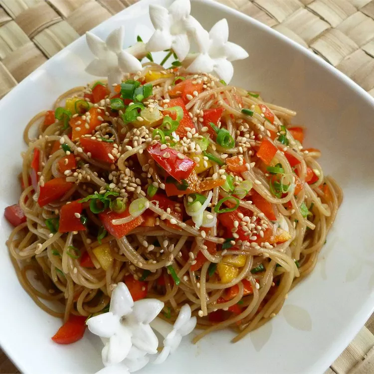

Seasame Noodle Salad

Description
Prep Time:
15 mins
Cook Time:
5 mins
Total Time:
20 mins
Servings:
8
Yield:
8 servings
Ingredient
- 1 (16 ounce) package angel hair pasta
- ½ cup sesame oil
- ½ cup soy sauce
- ¼ cup balsamic vinegar
- 1 tablespoon hot chili oil
- ¼ cup white sugar
- 1 teaspoon sesame seeds, or more if desired
- 1 green onion, chopped
- 1 red bell pepper, diced
Steps
- Fill a large pot with lightly salted water and bring to a rolling boil over high heat. Once the water is boiling, stir in the angel hair pasta, and return to a boil. Cook the pasta uncovered, stirring occasionally, until the pasta has cooked through, but is still firm to the bite, 4 to 5 minutes. Drain well in a colander set in the sink.
- Whisk together the sesame oil, soy sauce, balsamic vinegar, chili oil, and sugar in a large bowl. Toss the pasta in the dressing, then sprinkle with sesame seeds, green onion, and bell pepper. Serve warm, or cover and refrigerate for a cold salad.
Get recipe from https://www.allrecipes.com/recipe/214921/sesame-noodle-salad